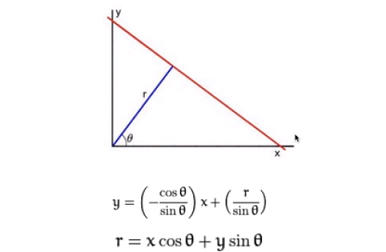
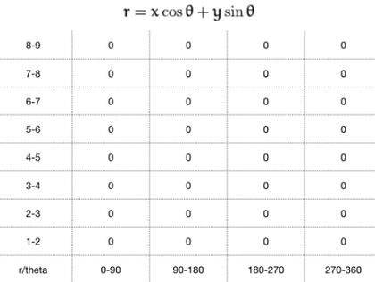
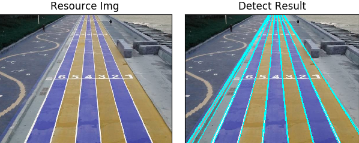
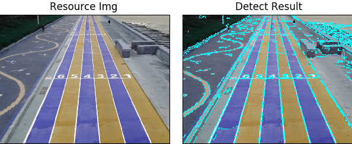
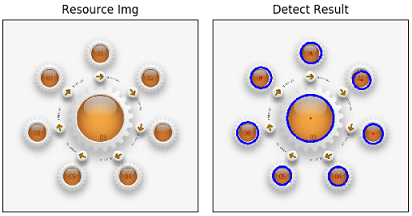
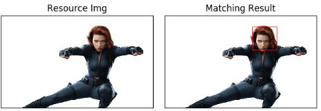

针对图像处理中的傅里叶变换、霍夫变换、模板检测进行总结。
1 傅里叶变换
傅里叶变换经常用来分析不同滤波器的频率特性。我们可以使用2D离散傅里叶变换(DFT)分析图像的频域特性。实现DFT的一个快速算法被称为快速傅里叶变换(FFT)。
对于一个正弦信号：$x(t)=Asin(2\Pi ft)$，它的频率为$f$，可以把图像想象成沿着两个方向采集的信号，所以对图像同时进行X方向和Y方向的傅里叶变换，就会得到这幅图像的频域表示。
更直观一点，对于一个正弦信号，如果幅度变化非常快则为高频信号，否则为低频信号。对应到图像，图像哪里的幅度变化非常大呢？边界点或噪声。所以说边界和噪声点是图像中的高频分量。
- OpenCV的傅里叶变换
OpenCV中相应的函数是cv2.dft()和cv2.idft()。1
2
3
4
5
6
7
8
9
10
11
12import numpy as np
import cv2
from matplotlib import pyplot as plt
img = cv2.imread('messi5.jpg',0)
dft = cv2.dft(np.float32(img),flags = cv2.DFT_COMPLEX_OUTPUT)
dft_shift = np.fft.fftshift(dft)
magnitude_spectrum = 20*np.log(cv2.magnitude(dft_shift[:,:,0],dft_shift[:,:,1]))
plt.subplot(121),plt.imshow(img, cmap = 'gray')
plt.title('Input Image'), plt.xticks([]), plt.yticks([])
plt.subplot(122),plt.imshow(magnitude_spectrum, cmap = 'gray')
plt.title('Magnitude Spectrum'), plt.xticks([]), plt.yticks([])
plt.show()
2 霍夫变换
霍夫变换在检测各种形状的技术中非常流行，如果要检测的形状可以用数学表达式表示，就可以用霍夫变换检测它。即使要检测的形状存在一点破坏或者扭曲也可以使用。
2.1 霍夫直线变换
概念原理
一条直线可以用数学表达式$y=mx+c 或者 \rho = xcos\Theta+ysin\Theta 表示$，因为第一种表达方式存在斜率为无穷大情况，所以可以用第二种表示方法，其中的两个变量分别表示：原点垂直于直线的距离，垂线与x轴夹角角度。对一条确定的直线来讲，这两个变量是固定的。因为每一条直线都可以用$(\rho,\Theta)$表示，所以可以创建一个2D数组(累加器)。初始化累加器所有值都为0.行表示$\rho$列表时$\Theta$。这个数组的大小决定了最后结果的准确性。$\rho$最大为180列，表示180度，$\Theta$最大值为图片对角线的长度。过程
- 先对一张图像Canny边缘检测，然后遍历每一个像素点，如果是边缘像素点，就根据该像素点的坐标$(x,y)$遍历$\Theta$的取值，分别求出对应的$\rho$值。这样就得到一系列$(\rho,\Theta)$的数值对。
- 如果这个数值对在累加器中也存在相应位置，就在这个位置上加1。然后遍历下一个像素点。
- 最后判断每个累加器中的值是否高于阀值，高于的话说明该位置(假如是$(\rho,\Theta)$)在图像中有一条直线，可以进行标记。
代码示例
1
2
3
4
5
6
7
8
9
10
11
12
13
14
15
16
17
18
19
20
21
22
23
24
25
26
27
28
29
30
31import cv2
import numpy as np
from matplotlib import pyplot as plt
img = cv2.imread('image05.jpg')
detect = np.copy(img)
# 变换为灰度图 gray = cv2.cvtColor(img, cv2.COLOR_BGR2GRAY)
# 进行Canny边缘检测 edge = cv2.Canny(gray, 50, 150, apertureSize=3)
# 进行霍夫直线运算 lines = cv2.HoughLines(edge, 1, np.pi / 180, 180)
# 对检测到的每一条线段
for line in lines:
# 霍夫变换返回的是 r 和 theta 值
rho, theta = line[0]
a = np.cos(theta)
b = np.sin(theta)
# 确定x0 和 y0
x0 = a * rho
y0 = b * rho
# 认为构建（x1,y1）,(x2, y2)
x1 = int(x0 + 1000 * (-b))
y1 = int(y0 + 1000 * a)
x2 = int(x0 - 1000 * (-b))
y2 = int(y0 - 1000 * a)
# 用cv2.line()函数在image上画直线
cv2.line(detect, (x1, y1), (x2, y2), (0, 255, 255), 2)
#展示检测结果
plt.subplot(121),plt.imshow(img)
plt.title('Resource Img'), plt.xticks([]), plt.yticks([])
plt.subplot(122), plt.imshow(detect)
plt.title('Detect Result'), plt.xticks([]), plt.yticks([])
plt.show()
2.2 霍夫直线变换的优化
从上面的过程可以看出：仅仅是一条直线就需要两个参数，这需要大量的计算。
概念
前面的方法又称为标准霍夫变换，它会计算图像中的每一个点，计算量比较大，另外它得到的是整一条线（$\rho$和$\Theta$），并不知道原图中直线的端点。所以提出了统计概率霍夫直线变换(Probabilistic Hough Transform)，是一种改进的霍夫变换：代码
1
2
3
4
5
6
7
8
9
10
11
12
13
14
15
16import cv2
import numpy as np
from matplotlib import pyplot as plt
img = cv2.imread('image05.jpg')
detect = np.copy(img)
gray = cv2.cvtColor(img,cv2.COLOR_BGR2GRAY)
edges = cv2.Canny(gray,50,150,apertureSize = 3)
# minLineLength：最短长度阈值，比这个长度短的线会被排除 minLineLength = 100 # maxLineGap：同一直线两点之间的最大距离 maxLineGap = 2 lines = cv2.HoughLinesP(edges,1,np.pi/180,10,minLineLength,maxLineGap)
for line in lines:
x1, y1, x2, y2 = line[0]
cv2.line(detect,(x1,y1),(x2,y2),(0,255,255),2)
plt.subplot(121),plt.imshow(img)
plt.title('Resource Img'), plt.xticks([]), plt.yticks([])
plt.subplot(122), plt.imshow(detect)
plt.title('Detect Result'), plt.xticks([]), plt.yticks([])
plt.show()
2.3 霍夫圆环变换
概念
霍夫圆环变换域直线变换类似，只不过线是用（$\rho$和$\Theta$）表示，圆是用（$x_center$和$y_center$和$\rho$）表示，从二维变成了三维，数据量变大了很多；所以一般使用霍夫梯度法减少计算量。代码
1
2
3
4
5
6
7
8
9
10
11
12
13
14
15
16
17
18
19
20
21
22
23import cv2
import numpy as np
from matplotlib import pyplot as plt
img = cv2.imread('image06.jpg')
detect = np.copy(img)
gray = cv2.cvtColor(img, cv2.COLOR_BGR2GRAY)
edges = cv2.Canny(gray, 50, 150, apertureSize=3)
plt.imshow(edges)
plt.show()
circles = cv2.HoughCircles(edges, cv2.HOUGH_GRADIENT, 1, 50, param2=60)
circles = np.int0(np.around(circles))
for i in circles[0, :]:
# 画圆
cv2.circle(detect, (i[0], i[1]), i[2], (0, 255, 0), 5)
# 画圆心
cv2.circle(detect, (i[0], i[1]), 2, (255, 0, 0), 3)
plt.subplot(121), plt.imshow(img)
plt.title('Resource Img'), plt.xticks([]), plt.yticks([])
plt.subplot(122), plt.imshow(detect)
plt.title('Detect Result'), plt.xticks([]), plt.yticks([])
plt.show()
3 模板匹配
模板匹配是用来在一副大图中搜寻查找模板图像位置的方法。和2D卷积一样，它也是用模板图像在输入图像上滑动，并在每一个位置对模板图像和与其对应的输入图像的子区域进行比较。返回的结果是一个灰度图像，每一个像素值表示了此区域与模板的匹配程度。
如果输入的图像大小是(W*H)，模板的大小是(w*h)，输出的结果就是(W-w+1, H-h+1)。当得到这幅图之后就可以使用函数cv2.minMaxLoc()来找到其中的最小值和最大值的位置了。
opencv中的模板匹配
1
2
3
4
5
6
7
8
9
10
11
12
13
14
15
16
17
18
19
20
21
22
23
24
25
26
27import cv2
from matplotlib import pyplot as plt
img = cv2.imread('image04.jpg', cv2.IMREAD_COLOR)
img2 = img.copy()
template = cv2.imread('image04_face.jpg', cv2.IMREAD_COLOR)
w, h, c = template.shape[::1]
# All the 6 methods for comparison in a list # methods = ['cv2.TM_CCOEFF', 'cv2.TM_CCOEFF_NORMED', 'cv2.TM_CCORR','cv2.TM_CCORR_NORMED','cv2.TM_SQDIFF', 'cv2.TM_SQDIFF_NORMED']
res = cv2.matchTemplate(image=img, templ=template, method=cv2.TM_CCOEFF_NORMED);
# 使用不同的比较方法，对结果的解释不同,If the method is TM_SQDIFF or TM_SQDIFF_NORMED, take min_loc, ELSE take max_loc
top_left = max_loc;
min_val, max_val, min_loc, max_loc = cv2.minMaxLoc(res);
bottom_right = (top_left[0] + w, top_left[1] + h)
cv2.rectangle(img,top_left, bottom_right, (0,0,255), 2)
#bgr转rgb
b,g,r = cv2.split(img)
img = cv2.merge((r,g,b))
b,g,r = cv2.split(img2)
img2 = cv2.merge((r,g,b))
#显示结果
plt.subplot(121),plt.imshow(img2)
plt.title('Resource Img'), plt.xticks([]), plt.yticks([])
plt.subplot(122), plt.imshow(img)
plt.title('Matching Result'), plt.xticks([]), plt.yticks([])
plt.show()以下图为例，是我在一张黑寡妇英雄人物图片中检测出其面部，并标记出的示例：
多对象的模板匹配
目标对象在图像中出现了多次的情况。1
2
3
4
5
6
7
8
9
10
11
12
13
14
15
16import cv2
import numpy as np
from matplotlib import pyplot as plt
img_rgb = cv2.imread('mario.png')
img_gray = cv2.cvtColor(img_rgb, cv2.COLOR_BGR2GRAY)
template = cv2.imread('mario_coin.png',0)
w, h = template.shape[::-1]
res = cv2.matchTemplate(img_gray,template,cv2.TM_CCOEFF_NORMED)
threshold = 0.8
#umpy.where(condition[, x, y])
#Return elements, either from x or y, depending on condition.
#If only condition is given, return condition.nonzero().
loc = np.where( res >= threshold)
for pt in zip(*loc[::-1]):
cv2.rectangle(img_rgb, pt, (pt[0] + w, pt[1] + h), (0,0,255), 2)
cv2.imwrite('res.png',img_rgb)以下是我以马里奥游戏为例，截取了一帧图像，到其中标记所有金币的结果展示：